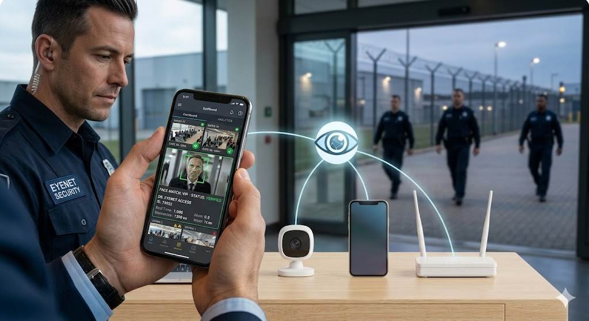
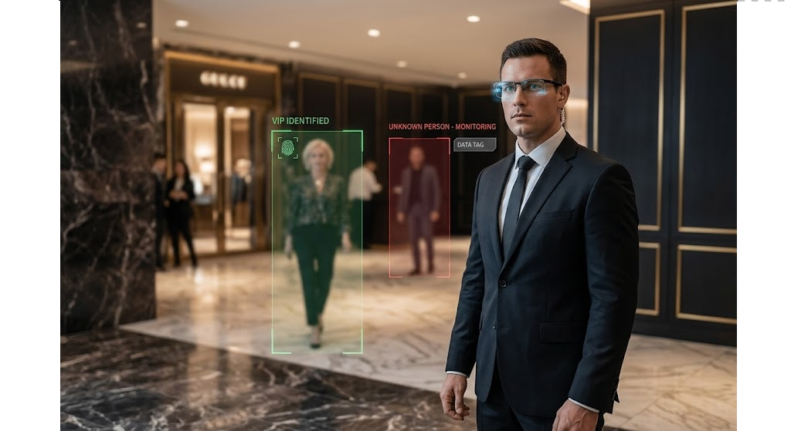
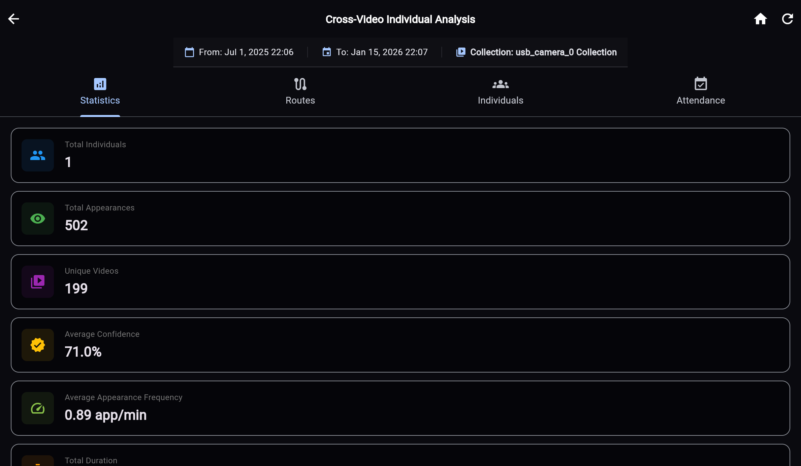

Night shifts that never blink
Security firms · corporate / industrial / government guard ops
Security firms · corporate / industrial / government guard ops
First-time monitoring that guards stay awake and alert.
Presence at fences, gates, and outer rings.
Continuous recording ready when incidents happen.

Presence services on every watch post.
Escalate when a post goes quiet.
Operators see verified alerts — not every raw feed.

Nodes at fences, gates, and outer rings.
Motion detection and POI / people-match on patrol feeds.
Coordinate the ring from one command view.

Evidence ready when the night goes wrong.
Timelines and exports for the next team.
Footage stays where policy demands.
Hope is not a night-shift strategy.
Stations and fences watched continuously. Evidence ready.

Multi-Camera

Triggers

Actions

Camera Stats

Dashboard
Stakeholders who win when this wedge is live
Multiply the night team with always-on station and fence watch.

Escalate quiet posts and perimeter hits before they become incidents.

Audit-ready evidence with on-prem control.
The EyeNet applications that power this use case
Automated personnel monitoring at watch stations with activity / inactivity alerts.
Mobile and patrol feeds with POI alerts and central command integration.
Deployment configurations for this wedge
Camera Input
Central data acquisition for visual intelligence
Area Mode
Wide-area surveillance for large spaces
Gate Mode
Comprehensive monitoring of entrances, exits, corridors
Goggles Mode
Mobile, first-person monitoring via wearable tech
Capabilities and target users for this wedge
Night and perimeter coverage cannot depend on hope that every post stays awake. EyeNet watches stations and fences continuously and escalates when a post goes quiet or motion hits the ring — with timestamped evidence ready.
Key Features:
Target Users:
Security firms and corporate, industrial, and government guard operations.
Available Modes:
Area, Gate, Goggles
Jump to the product site, the cite-backed value page, or the full use-case hub.